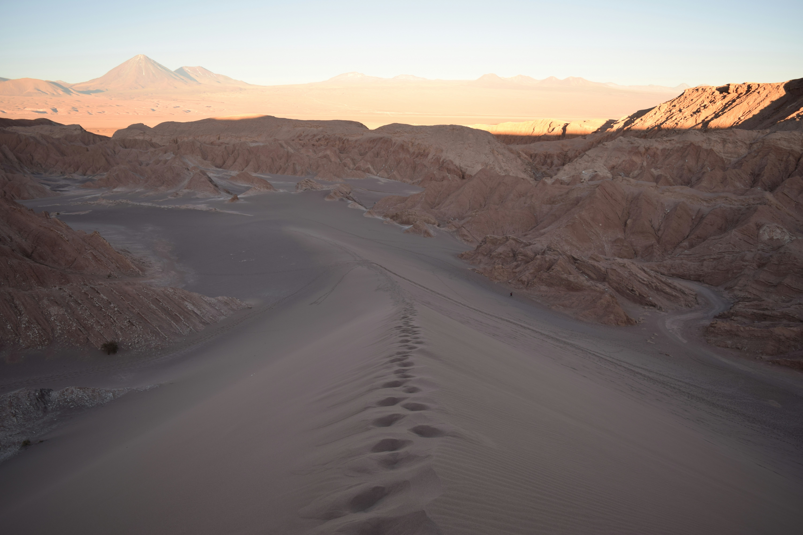
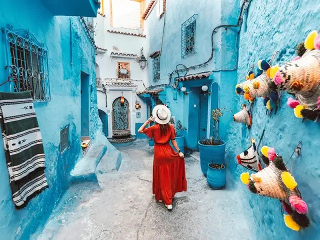
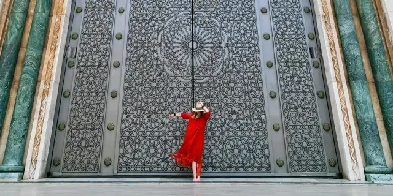
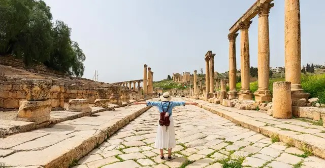
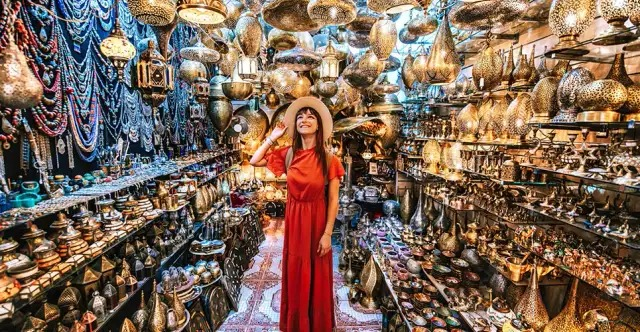

Marrocos: As Melhores Experiências

Descubra a cidade azul de Chefchaouen
Explore as vielas pitorescas e coloridas da cidade mais azul do mundo.

Passeio de camelo pelo Saara
Uma aventura inesquecível entre as dunas douradas do Saara.

Encante-se com Casablanca
Descubra a mistura entre tradição e modernidade na cidade costeira.

Imersão cultural em Fès
Visite uma das medinas mais antigas e bem preservadas do mundo árabe.

Feiras e mercados de Marrakesh
Experimente o caos organizado das feiras locais e compre lembranças únicas.

Sabores de Marrocos
Deguste pratos autênticos como o cuscuz e o tajine.